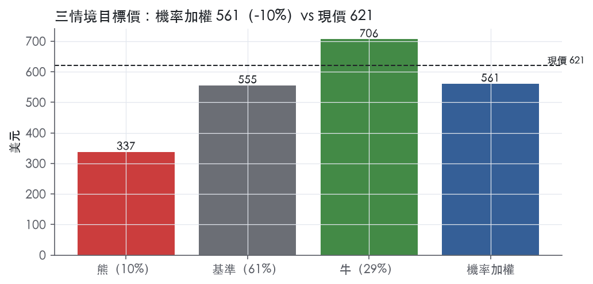
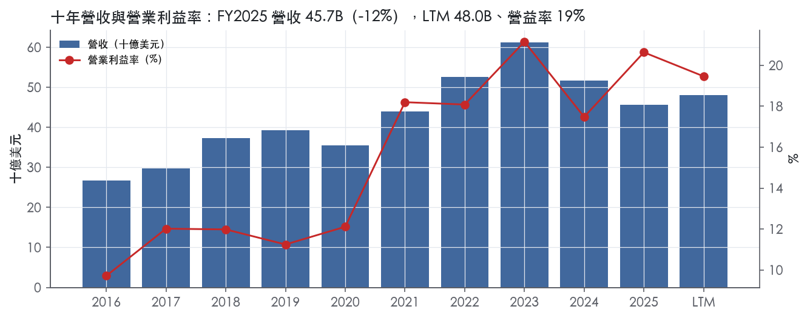
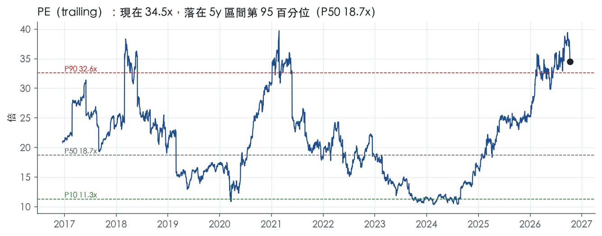
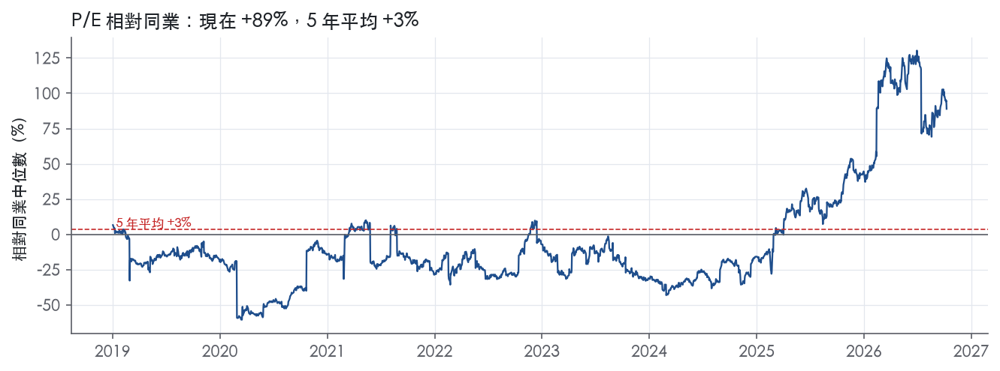
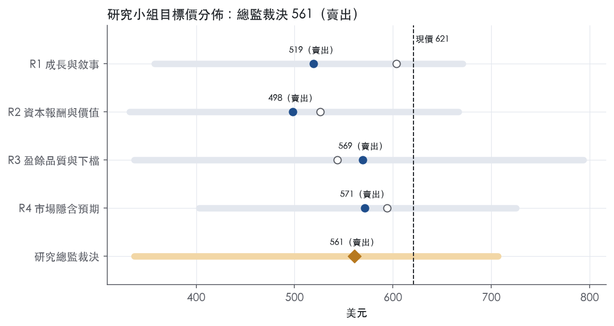
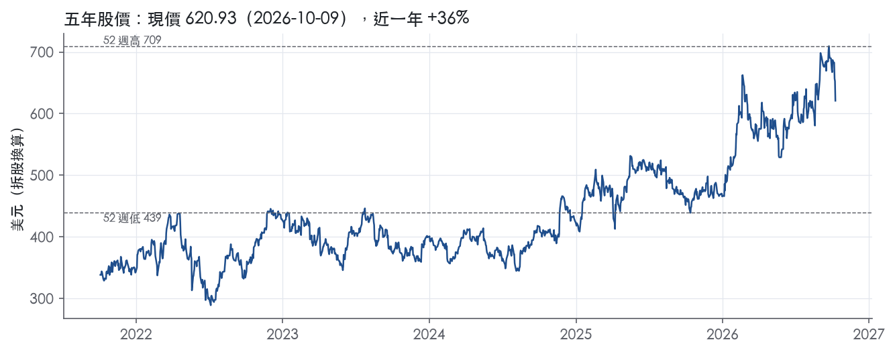

評等總表 › 工業 › DE
復甦已定價，倍數收斂，偏空｜評等 賣出｜目標價 561
| 報告日 | 評等 | 目標價 | 當時股價 | 超額報酬 |
|---|---|---|---|---|
| 2026-10-09 | 賣出 | 561 | 621 | -18.9% |
| 評等 | 賣出 |
| 12 個月目標價 | 561 美元 |
| 現價 | 620.93 美元（2026-10-09） |
| 預期報酬 | 股價 -9.7%＋股息 1.0%＝總報酬 -8.6%；同業籃門檻 10.2%，超額 -18.9% |
| 估值方法 | P/E 23.0x，套在第 5–8 季的EPS（也就是一年後的未來四季） |
| 三情境 | 熊 337／基準 555／牛 706 |
| 研究流程 | 四位研究員兩輪辯論＋研究總監裁決 |
| 資料來源 | SEC EDGAR XBRL、Tiingo、FRED（全免費） |
復甦已定價，倍數收斂，偏空（研究總監裁決，四位研究員兩輪辯論後）
評等 賣出｜12 個月目標價 561 美元（總監三情境機率加權 577 與研究員中位數 544 各半）｜現價 620.93（2026-10-09）
預期報酬：股價 -9.7%＋股息 1.0%＝總報酬 -8.6%。同業籃門檻 10.2%，超額 -18.9%。
估值方法：P/E 23.0x，套在第 5–8 季的EPS（也就是一年後的未來四季）。三情境：熊 337（10%）／基準 555（61%）／牛 706（29%）。
什麼會讓研究總監改變看法：FY2027淨利指引中點≥6.0B且美加大農業展望與PPA指引同時翻正，或公司揭露SaaS/訂閱營收規模且採用率回升，我轉中性並把倍數移到P90；反之FY2027指引PPA再降且FY2026 10-K信用損失準備續升，熊機率上調。
| 過去四季（實際，FY2026Q3） | 未來四季 | 第 5–8 季 | 第 9–12 季 | |
|---|---|---|---|---|
| 營收（B） | 48.0B | 50.4B | 55.4B | 59.9B |
| 營收成長 | 8.0% | 5.0% | 10.0% | 8.0% |
| 營業利益率 | 19.5% | 18.5% | 20.0% | 20.5% |
| EPS（美元） | 17.99 | 18.74 | 24.13 | 27.91 |
| EPS 成長 | -5.7% | 4.2% | 28.8% | 15.7% |
| 每股股息（美元） | 6.48 | 6.48 | 6.48 | 6.48 |
| P/E（現價） | 34.5x | 33.1x | 25.7x | 22.2x |
| 股息殖利率（現價） | 1.0% | 1.0% | 1.0% | 1.0% |
過去四季為申報數字；預測為研究總監的假設、程式計算。倍數與殖利率都用現價計算，用來看現價對應各期獲利的高低。
| 情境 | 機率（歷史） | 故事 | 未來四季營收成長 | 第 5–8 季營益率 | 倍數 | 目標價 | 股價漲跌 |
|---|---|---|---|---|---|---|---|
| 熊 | 10%（8%） | 對應風險表第1條（PPA需求持續收縮、谷底延後，5月到8月四條展望下修為證）加第3條（高分位倍數收斂）：FY2027營收轉負、SAT/CF基期效應消失，谷底盈餘仍獲前瞻帶P75以上倍數但股價跌破52週低點 | -4.0% | 18.0% | 21.0x | 337 | -45.7% |
| 基準 | 61%（63%） | 2026為PPA谷底、FY2027溫和、FY2028量能回升至20%營益率，但市場付給復甦年盈餘的前瞻倍數從谷底水準收斂到前瞻帶P75–P90上半 | 5.0% | 20.0% | 23.0x | 555 | -10.6% |
| 牛 | 29%（29%） | 純週期牛：2026-11 FY2027指引確認PPA轉正、美加大農業展望翻正、大農換機提前，IEEPA成本移除撐起22%營益率；倍數微調至P90之內的24x，不假設科技平台重估 | 8.0% | 22.0% | 24.0x | 706 | 13.8% |
目標價由程式依研究總監的驅動與倍數計算；機率由研究總監給定。括號內是歷史頻率：把這檔股票過去十年 12 個月報酬的波動形狀，置中在基準情境，結果落在各情境附近的比例。

四位研究員用不同方法各自估值，回應研究總監的質疑後交出第二輪，最後由總監逐點裁決。各研究員的主張見第七章，裁決理由見第八章，完整論證見《研究底稿》。
| 立場（一輪→二輪） | 加權目標價（一輪→二輪） | 評等（一輪→二輪） | 第二輪倍數 | 熊～牛目標價 | |
|---|---|---|---|---|---|
| R1 成長與敘事 | 看空→看空 | 603→519 | 減碼→賣出 | 22.0x | 358～671 |
| R2 資本報酬與價值 | 看空→看空 | 526→498 | 賣出→賣出 | 21.0x | 333～667 |
| R3 盈餘品質與下檔 | 看空→看空 | 543→569 | 賣出→賣出 | 23.0x | 337～794 |
| R4 市場隱含預期 | 看空→看空 | 594→571 | 減碼→賣出 | 24.0x | 403～725 |
| 研究總監裁決 | 看空 | 561 | 賣出 | 23.0x | 337～706 |
目標價由程式依各自的驅動與倍數計算；評等＝機率加權總報酬 − 同業籃門檻。
Deere是一家自1837年以來生產農業設備的工業集團，目前透過四個業務分部管理整體營運：Production & Precision Agriculture（PPA）、Small Agriculture & Turf（SAT）、Construction & Forestry（CF）與Financial Services（FS）¹。公司以「Smart Industrial Operating Model」為核心策略框架，聚焦Production Systems、Technology Stack、Lifecycle Solutions三大支柱，試圖把硬體機具、嵌入式軟體、連接性、數據平台與售後服務整合成一套對客戶生產流程的解決方案，而非單純賣機器¹。客戶端分為大型農業生產者（玉米、大豆、小麥、棉花、甘蔗）、小型農業與草坪（乳牛畜牧業者、高值作物農戶、草坪與高爾夫球場業者），以及建築、道路與林業承包商¹。本質上這是一家把農機設備製造商升級成「設備＋精準科技＋金融服務」綜合體的公司。FS則是輔助性的金融分部，主要提供零售貸款、循環信用帳戶、批發應收款與租賃，服務對象是向經銷商購買Deere設備的終端客戶與經銷商本身¹。
PPA是公司規模最大的分部，FY2025淨銷售17,311M美元，占設備營運淨銷售45%，產品線涵蓋4WD/track及row crop牽引機、聯合收割機、採棉機、甘蔗收割機、整地播種與噴灌設備¹。SAT分部FY2025淨銷售10,224M美元，占比26%，產品包括特用/公用/小型牽引機、乾草與飼料設備、割草機、草坪與公用車輛，以及高爾夫球場設備，並透過Home Depot、Lowe's等大型零售商銷售部分草坪產品¹。CF分部FY2025淨銷售11,382M美元，占比29%，產品線涵蓋挖土機、推土機、滑移裝載機、Wirtgen品牌的道路建設設備（銑刨機、瀝青鋪路機、壓實機）以及林業用的集材機、採伐機¹。三個設備分部合計構成公司主要營收，FS則不計入上述占比但貢獻淨利，10-K未以單一數字揭露FS占集團總營收比重。從FY2023高點61.25B美元到FY2025的45.68B美元，公司營收連續兩年下滑，反映農機產業周期進入下行段，但FY2025營益率回升至20.6%，顯示成本與定價管控仍有效。backlog方面，截至2025年11月2日，PPA積壓訂單約4.0B美元（較去年同期5.2B美元下降），SAT約1.9B美元（較去年2.1B美元下降），反映農業需求走弱；CF積壓訂單則逆勢成長至3.8B美元（去年同期2.2B美元），因應零售需求回升而提高產能排程¹。
公司在美國與加拿大透過約2,050個獨立經銷商據點銷售，其中約1,600個銷售農業設備、約450個銷售建築與林業設備，另有約100個道路建設專營據點與約260個純草坪設備據點¹。美加以外，農業與草坪設備透過經銷商在逾100個國家銷售，Wirtgen集團則在全球多國自營銷售與服務子公司，尤以歐洲、印度、澳洲最為重要¹。業務區域劃分為四大地理區：非洲/亞洲/中東、歐洲與獨聯體（CIS）、拉丁美洲與南美洲、美加與澳洲，公司銷售多數仍集中於美國與加拿大，但持續在巴西等新興市場投資擴張，2025年6月慶祝進入巴西市場25週年¹。零售通路上，部分草坪與小型建築產品也透過Home Depot、Lowe's等大型零售商銷售，這是SAT分部較特殊的多元通路策略¹。整體而言，Deere的客戶結構高度集中於北美大型農場主與建築承包商，國際化程度低於同業CNH或Komatsu，是其相對依賴北美農業周期的結構性原因。
FY2025Q4（截至2025-11-02），公司營收12.39B美元、EPS 3.92（is/），營益率17.6%，季度表現仍處於下行周期尾端。FY2026Q1（截至2026-02-01），營收9.61B美元年增13.0%、EPS 2.42，現金流轉為負（CFO -0.89B、FCF -1.15B），反映典型的農機淡季資金壓力。FY2026Q2（截至2026-05-03），公司營收和營收合計13.369B美元，年增5%²；淨利1.773B美元，EPS 6.55美元，略低於去年同期的1.804B美元與6.64美元²；前六個月營收22.981B美元年增8%，淨利2.429B美元、EPS 8.97美元（去年同期21.272B美元、2.673B美元、9.82美元）²。當季PPA淨銷售4,503M美元年減14%、營益率15.7%（去年同期22.0%），SAT淨銷售3,485M美元年增16%、營益率20.6%，CF淨銷售3,790M美元年增29%、營益率14.8%，FS淨利190M美元年增18%²。公司將FY2026淨利指引維持在4.5B至5.0B美元區間²。FY2026Q3（截至2026-08-02），公司營收和營收合計12.608B美元年增5%，淨利1.379B美元、EPS 5.10美元（去年同期12.018B美元、1.289B美元、4.75美元）³；前九個月營收35.589B美元年增7%，淨利3.808B美元、EPS 14.06美元（去年同期33.290B美元、3.962B美元、14.57美元）³。當季PPA淨銷售3,998M美元年減6%、營益率13.2%，SAT淨銷售3,383M美元年增12%、營益率18.4%，CF淨銷售3,618M美元年增18%、營益率12.1%，FS淨利219M美元年增7%³。公司將FY2026淨利指引上修至4.75B至5.00B美元，並稱訂單趨勢印證2026年為農機周期谷底³。綜合兩季走勢，PPA（大型農業）持續衰退但降幅收斂，SAT與CF則連續兩季雙位數成長並帶動營益率擴張，顯示公司靠建築與小農業兩塊業務對沖大農業的周期性下滑。
公司自稱其成長引擎是「Smart Industrial Operating Model」與對應的「Leap Ambitions」，2025年12月已就2030年目標進行refined，強調自動化、自主作業（autonomy）、數位化、生命週期解決方案與「Solutions as a Service」的採用率將成為衡量指標¹。公司明確表示技術棧（Technology Stack）投資要把機具轉化為更聰明、更有效率的機器，並透過John Deere Operations Center把設備位置、使用率、效能與維護資訊即時連回經銷商與業主¹。管理層在8月的新聞稿中直接表示「我們持續相信2026年將是當前農機設備周期的谷底」，並以早期訂單計畫趨勢、二手設備庫存改善、客戶對先進科技採用率提升作為信心來源³；5月的新聞稿則強調公司多元化的業務組合、尤其是SAT與CF分部的強勁表現，是支撐市占率擴張與長期成長目標的關鍵²。公司也把CF的SmartDetect、SmartGrade等精準科技視為跨分部複製PPA技術的成長槓桿，顯示其戰略意圖是用農業端驗證過的技術堆疊帶動建築與林業的加值定價¹。總的來看，Deere的敘事邏輯是「周期底部已現、科技溢價擴大」，但這個論點高度依賴PPA何時真正止跌，目前PPA營收與營益率仍在收縮、僅降幅趨緩，尚未確認反轉。CF與SAT的雙位數成長部分來自低基期與價格實現，能否在規模放大後維持目前的營益率擴張速度，仍待後續驗證。現股價對應trailing P/E 34.5x、EV/EBITDA 15.0x，已處於近五年90%以上分位，市場顯然已部分提前反映「谷底已現」的樂觀敘事，留給基本面超預期的安全邊際有限。

Deere 的護城河評為「窄」，趨勢「變寬」：我們有把握未來 5 年以上 ROIC 高於資本成本，但農機與營建機械的周期性，讓我們無法對 10 年以上下同樣的把握。支撐評級的是品牌、北美經銷網，以及精準農業軟硬體綁定帶來的轉換成本，三者都在強化。壓住評級的有兩點：上一輪下行期 ROIC 曾跌破資本成本，以及科技新進者與中國營建機械廠正在擴張。
無形資產。 10-K 明言，John Deere 的品牌知名度在北美及世界許多地區是一項競爭因素¹。公司擁有大量專利、商標、著作權與營業秘密，但不認為任何業務依賴單一專利或專利家族¹。品牌是實質壁壘；專利只是輔助，構不成單點護城河。
轉換成本。 公司供應的零件中有許多是專有零件，並持續支援過去售出的產品¹。John Deere Operations Center 把設備業主、經理人與經銷商遠端連到田間設備，即時提供位置、使用率、效能與維護資訊¹。精準科技除了內建於設備，也透過經銷網以售後改裝方案提供，並以服務警示與預測性維修支援聯網機器¹。農場的作業紀錄、農藝數據與維修歷史都沉澱在 Deere 平台上，換品牌的代價就不只是機器價差，這是護城河變寬的主要引擎。
效率規模。 公司在美加對約 2,050 個獨立經銷據點銷售，其中約 1,600 個銷售農業設備¹。農村市場的服務半徑與零件庫存門檻，使單一區域能養活的全線經銷商有限，先占者的據點密度後進者難以複製。Financial Services 提供零售與批發融資，設計目的是增進產品銷售，並在非使用季節減免融資費用¹。融資、經銷與零件綁在一起，讓 Deere 在下行期仍能守住價格。
不列網路效應與成本優勢：10-K 沒有證據顯示用戶增加會提升其他用戶的價值；製造段落也只描述成本優化，沒有顯示結構性成本領先。
數字支持「窄且變寬」，不支持「寬」。ROIC 十年平均 17.3%，高於資本成本代理值 10.2%，平均超額 7.0%。
衝突出在穩定度。ROIC 有資料的 8 年中只有 5 年高於資本成本，標準差 8.6%，最低 7.3%。FY2018、FY2019、FY2020 的 ROIC 分別為 9.6%、9.7%、7.3%，都低於門檻。寬護城河不該在一次溫和下行就跌破資本成本，這是我們不給「寬」的直接理由。代理值用的是現行 10 年債殖利率，套回低利率年代會高估當時的門檻，三年未達標有一部分來自這個偏差。但我們不靠這點替評級加分。
「變寬」的證據在本輪下行期。FY2024、FY2025 營收成長為 -15.6%、-11.7%，ROIC 仍有 22.8% 與 24.9%，營益率為 17.5% 與 20.6%。FY2016 營益率只有 9.7%（量化底稿最低值），對照之下，周期底部的利潤率明顯墊高。營益率十年平均 15.3%、標準差 4.0%，波動遠小於 ROIC，顯示定價力比資本周轉穩定。ROE 從十年平均 30.7% 降到最新的 20.6%，反映淨利下滑與金融分部槓桿，不改變對設備本業的判斷。
最大威脅是科技護城河被拆解。10-K 承認，農機產業因多家競爭者出現與全球擴張而更加競爭，科技也正吸引科技公司與新創等非傳統競爭者進入¹。如果自駕、感測與數據平台走向開放標準或由第三方提供，轉換成本會從 Deere 平台流失。專有零件與維修綁定面對維修權相關的立法壓力，一旦受限，售後利潤與轉換成本會同時被削弱。
營建端的全球競爭者包括 SANY、XCMG、Liugong、LGMG、SDLG 等廠商¹。CF 的品牌與經銷優勢明顯弱於農業端，集團護城河的寬度主要靠農業撐住。
最後是周期。農機銷售受農場現金收入、作物價格、利率，以及二手設備的價值、車齡與數量影響¹。二手庫存偏高時，新機的定價力會被侵蝕。
目標倍數應相對 AGCO、CNH 等農機同業給予溢價：本輪下行期 ROIC 仍遠高於資本成本，證明定價力已優於上一輪周期。但評級是窄，溢價應建立在中周期獲利上，不宜套用寬護城河的長存續期假設。現行 P/E 34.5x 位於五年 94.7% 分位，高於五年 P90 的 32.6x，建議以五年中位 18.7x到 P90 之間作為溢價區間的錨，現價已超出窄護城河能支撐的上緣。
| 指標 | 最新 | 十年平均 | 標準差 | 最低 | 最高 |
|---|---|---|---|---|---|
| ROIC | 24.9% | 17.3% | 8.6% | 7.3% | 33.5% |
| 營業利益率 | 20.6% | 15.3% | 4.0% | 9.7% | 21.2% |
| FCF 利潤率 | 13.4% | 10.6% | 5.0% | 2.5% | 18.7% |
| ROE | 20.6% | 30.7% | 8.5% | 20.6% | 48.4% |
程式計算。資本成本代理值（10 年債＋5%）：10.2%；ROIC 平均減資本成本：7.0%；ROIC 有資料的 8 年中，高於資本成本 5 年。
Deere 的現金流對淨利的覆蓋在 LTM、三年、十年三個窗口都維持綠燈，顯示盈餘不是靠應計堆出來的【量化底稿】。但計分表上有一個黃燈（利息保障倍數）跟一個程式紅旗（FY2025 存貨成長遠超營收成長），這兩項都跟 Deere 本業＋Financial Services 的雙重結構有關，必須拆開來看才能判斷是真風險還是會計口徑問題。整體結論是：GAAP 盈餘可信，但週期底部的存貨與訂單風險應該反映在估值假設上，不是純粹的財報品質問題。
現金持續跟上盈餘，三個核心比率全部綠燈【量化底稿】。CFO／淨利 LTM 1.49x、近三年平均 1.21x、十年平均 1.36x，全部大於 1【量化底稿】。FCF／淨利 LTM 1.24x、近三年 0.99x、十年 1.09x，扣掉資本支出後現金仍能覆蓋淨利【量化底稿】。應計比率 LTM -2.2%、近三年 -0.9%、十年 -0.9%，全部是負值，代表盈餘沒有被應計項目灌水，反而現金流優於淨利【量化底稿】。從年度表也能看到，FY2025 CFO 7.46B、FCF 6.10B，對照淨利 5.03B，現金覆蓋度依然健康（is/cf 年度表）。唯一要注意的是近三年 FCF／淨利掉到 0.99x，貼近但未跌破 0.90x 綠燈門檻，資本支出比例從 FY2023 的 2.4% 爬升到 FY2025 的 3.0%，是資本支出在吃掉一部分自由現金流，而非盈餘品質惡化。
這次新聞稿揭露的主要特殊項目是關稅回收（tariff recoveries），公司在 2026 財年第三季認列 110M 美元，前九個月累計 382M 美元，主要列在「生產成本」科目下³。新聞稿本身並未提供非 GAAP 調整後 EPS 的重編表，公開的 EPS 都是 GAAP 稀釋每股盈餘（第三季 5.10 美元、前九個月 14.06 美元）³。這筆關稅回收屬於貿易政策變動帶來的一次性收益，不是經常性的營運改善，估值時應該從營業利益率的改善中剔除，否則會高估本業定價能力。除此之外，資料包未見重大重組費用或減損項目揭露，SBC／營收長期維持在 0.2–0.3% 的低水位（LTM 0.3%），對盈餘品質影響可忽略【量化底稿】。
淨負債／EBITDA 在 LTM 只有 0.70x，近三年平均 0.58x，都遠低於 1.50x 綠燈門檻，但十年平均卻高達 2.46x，兩者差距主要反映 Deere Financial Services 的融資性質，FY2017、FY2018 淨負債一度達到 16.56B、23.33B（dv 年度表），但這些負債對應零售貸款、應收帳款等有收益資產的融資，不是為了撐營運而舉債，近年淨負債隨著獲利高峰大幅去化到 5–8B 區間，目前槓桿不是問題。股東回饋方面，（股利＋回購）／淨利 LTM 50.3%、近三年 73.6%、十年 65.3%，全部綠燈，且稀釋股數年變動 LTM -0.0%、近三年 -3.9%，顯示回購持續淨減少股數而非只是對沖增發【量化底稿】。Capital Corporation 作為金融服務子公司，公司承諾維持其有形淨值不低於 50M 美元且合併固定費用保障倍數不低於 1.05 倍，截至 2025 年 11 月 2 日完全合規、兩個財年都未需額外撥款¹，代表金融服務臂的資本結構有制度性保護，不會意外拖累母公司。
利息保障倍數黃燈（LTM 3.22x、十年平均 4.55x）：這個比率用營業利益除以利息費用，但 Deere 的利息費用裡包含 Financial Services 為融資應收帳款所負擔的資金成本，而這部分成本對應的收益計入 FS 淨利而非營業利益，本季 FS 淨利仍有 219M 美元且年增 7%³，所以分母膨脹而分子未完全反映相應收益，比率被結構性低估，屬於會計口徑問題而非真實付息壓力。淨負債／EBITDA 十年平均 2.46x vs LTM 0.70x 的落差：如前述，高槓桿年份集中在 FY2017–2021 擴張期，且負債對應 FS 的生息資產，目前並非真紅旗。存貨成長比營收快 16.1 個百分點（FY2025）紅旗：這條程式標出的紅旗是真實的需求風險，不是會計假警報。FY2025 營收下滑 11.7%（dv 年度表），MD&A 明確指出「不利的市場狀況導致銷售量下滑、更依賴銷售激勵、應收帳款沖銷增加」⁴，同期 PPA 訂單backlog 從 5.2B 降到 4.0B、SAT backlog 從 2.1B 降到 1.9B（10-K 稱 backlog 因需求下滑而減少）¹，顯示公司在需求轉弱時仍維持較高存貨水位，存在去化風險。雖然 2026 年 CF 的 backlog 回升到 3.8B，但 8-K 最新產業展望仍預期美加大型農機全年下滑 15–20%、南美下滑 15–20%³，存貨去化壓力在未來幾季不會立刻解除。
估值應該以 GAAP 淨利為主軸，但扣除 FY2026 關稅回收這類一次性項目後再做本業獲利能力評估，避免把貿易政策紅利當成常態性利潤率改善。現金轉換與股東回饋都健康，不需要對 LTM 盈餘做大幅品質折價，但考慮到存貨/景氣週期底部的真實紅旗，應在估值模型中對 FY2026–2027 的毛利率與存貨去化成本留一些緩衝，而不是直接套用 LTM 數字線性外推。槓桿本身（LTM 淨負債／EBITDA 0.70x）不構成限制倍數的理由，但若把金融服務表外融資需求納入敏感度分析，週期下行時的流動性緩衝應比帳面槓桿顯示的更保守。
| 項目 | LTM | 近三年 | 十年 | 燈號 | 規則 |
|---|---|---|---|---|---|
| 營業現金流／淨利 | 1.49x | 1.21x | 1.36x | 綠 | ≥1.00x 綠、<0.80x 紅 |
| 自由現金流／淨利 | 1.24x | 0.99x | 1.09x | 綠 | ≥0.90x 綠、<0.60x 紅 |
| 應計比率（(淨利−CFO)／平均總資產） | -2.2% | -0.9% | -0.9% | 綠 | ≤0.0% 綠、>5.0% 紅 |
| SBC／營收 | 0.3% | 0.3% | 0.2% | 綠 | ≤3.0% 綠、>8.0% 紅 |
| 淨負債／EBITDA | 0.70x | 0.58x | 2.46x | 綠 | ≤1.50x 綠、>3.00x 紅 |
| 利息保障倍數（營業利益／利息） | 3.22x | 3.65x | 4.55x | 黃 | ≥8.00x 綠、<3.00x 紅 |
| 稀釋股數年變動 | -0.0% | -3.9% | -1.7% | 綠 | ≤0.0% 綠、>3.0% 紅 |
| （股利＋回購）／淨利 | 50.3% | 73.6% | 65.3% | 綠 | ≥50.0% 綠、<0.0% 紅 |
| 存貨成長 − 營收成長（FY2025） | +16.1pp | — | — | 紅 | ≤5pp 綠、>15pp 紅 |
程式計算；燈號以 LTM（無則近三年平均）判定。
| 風險 | 觸發指標（看什麼數字、在哪裡看） | 對 EPS 的影響方向與粗略幅度 | 未來 12 個月發生機率（高／中／低） | 出處 |
|---|---|---|---|---|
| PPA（大型農業）需求持續收縮，谷底時點延後 | 季度10-Q中PPA net sales年增率、operating margin；FY2026美加Large Ag產業展望（Down 15-20%）；PPA backlog金額（11/2/2025為4.0B，去年同期5.2B） | 方向向下，幅度大——PPA占設備營運淨銷售45%（17,311M，FY2025） | 高 | ¹³ |
| 關稅與貿易政策不確定性（IEEPA訴訟結果、USMCA豁免資格） | 每季財報中揭露的tariff recoveries金額（Q3 2026為110M，9個月382M）；最高法院IEEPA案裁決時間點 | 方向不確定，FY2025直接關稅成本約600M美元，若裁決不利可能擴大成本 | 高 | ⁴³ |
| 估值已處於歷史高分位，敘事落空風險大於基本面風險 | trailing P/E（現在34.5x，5年分位94.7%）、EV/EBITDA（15.0x，5年分位84.2%）相對帶位 | 方向向下，幅度大——倍數若回落至5年中位數18.7x／11.3x，股價承壓遠大於EPS本身變化 | 中 | 研究判斷 |
| 金融服務信用損失持續上升 | 10-Q揭露retail notes與financing lease receivables的allowance for credit losses金額、逾期率（delinquency） | 方向向下，幅度中——FY2025 allowance因農業客戶逾期上升而增加 | 中 | 10-K 年報 FY2025 Item 1A（風險因素） |
| 利率與資金成本變化影響FS利差與客戶融資意願 | 10年期美債利率（現為5.22%）、聯邦基金利率（現為3.75%）、FS financing spread揭露 | 方向不確定，幅度中——高利率已在FY2025壓抑農機、建築設備需求 | 中 | ⁴；利率數字為量化底稿 / |
PPA需求收縮是最大的獲利變數。PPA是公司最大分部，FY2025淨銷售17,311M美元，占設備營運淨銷售45%¹。FY2026Q3 PPA淨銷售3,998M美元，年減6%，營業利益527M美元，年減9%，營業利益率13.2%，低於去年同期13.6%³。公司FY2026產業展望明確寫出美加Large Ag「Down 15 to 20%」，公司自身PPA淨銷售展望為「Down ~10%」³。backlog方面，PPA積壓訂單從去年同期的5.2B美元降至4.0B美元，SAT從2.1B美元降至1.9B美元，均反映農業需求走弱¹。管理層稱2026年是周期谷底，但這個判斷目前只有「早期訂單趨勢、二手設備庫存改善」等質化佐證³，尚未看到PPA年增率翻正。這是整份報告中唯一「現在就在發生、且權重最大」的風險。
關稅與貿易政策是會直接打在毛利率上的變數。FY2025因進口關稅對公司的直接影響約600M美元，不含對供應商與市場需求的間接影響⁴。公司近80%美國國內銷售在美國組裝，其餘主要自歐洲、墨西哥、印度、日本進口⁴。2025年11月5日最高法院就IEEPA關稅權限進行口頭辯論，若裁決對公司有利，可能帶來已付關稅的追溯退還；若不利，關稅成本結構將延續⁴。公司FY2026Q3與前九個月已分別取得110M美元與382M美元的關稅回收（tariff recoveries）³，顯示這已是會實際計入損益的變數，不是單純的免責聲明。公司在2024年將小型滑移裝載機產線移往墨西哥，隨後該產品在2025年被加徵額外關稅，公司正尋求USMCA豁免資格但無法保證成功⁴。
估值分位本身就是風險，不是獲利風險但是倍數風險。目前trailing P/E 34.5x，位於5年區間的94.7%分位，EV/EBITDA 15.0x位於84.2%分位（資料包）。這代表市場已經相當程度買進「2026年是谷底、2027年反轉」的敘事。公司管理層自己在新聞稿中反覆強調谷底論（「2026 will mark the bottom of the current ag equipment cycle」）³，但目前PPA仍是年減6%，尚未翻正。若接下來一到兩個季度PPA未能如期止跌或SAT/CF的高速成長因基期墊高而放緩，市場重新定價倍數到5年中位數附近（P/E 18.7x、EV/EBITDA 11.3x），對股價的衝擊會遠大於EPS本身的下修幅度。
金融服務信用品質惡化會侵蝕FS淨利貢獻。10-K直接寫出FY2025「allowance for credit losses on retail notes and financing lease receivables increased in 2025 primarily due to higher expected losses on agriculture and turf customer accounts as a result of elevated delinquencies」⁴，且公司承認「there is no guarantee that customers experiencing financial difficulty will be able to satisfy their obligations」，暗示未來準備金可能再增加⁴。FS淨利FY2026Q3為219M美元，年增7%，但公司FY2026對FS淨利指引為約870M美元（Financial Services Net Income ~$870）³，低基期下的年增率掩蓋了農業客戶逾期上升的壓力，這是在設備銷售周期底部時最容易被忽略的二次效應。
利率是雙面刃，同時影響需求端與FS利差端。10-K明確寫道「High interest rates can dampen overall economic activity and/or the financial condition of our customers」「The markets for our agriculture, turf, and construction products were negatively impacted in 2025 by elevated interest rates」⁴，且巴西利率在2025年維持高位⁴。目前美國10年期公債利率5.22%、聯邦基金利率3.75%（2026-10-08／2026-09-01），利率水準仍處於近年相對高位，若維持高位或信用利差（ig_oas 0.82、hy_oas 3.15）走闊，將同時壓抑設備需求與FS資金成本。
SAT與CF的雙位數成長部分建立在低基期與價格實現，規模放大後邊際擴張可能收斂。FY2026Q3 SAT淨銷售年增12%、營業利益率18.4%（去年16.0%）；CF淨銷售年增18%、營業利益率12.1%（去年7.7%）³，公司FY2026對CF的淨銷售展望是「Up ~20%」³。這兩塊業務去年同期基期本身就偏低（CF去年Q3營業利益率僅7.7%），目前的高年增率很大一部分來自價格實現（Price Realization CF約+3.0%）而非結構性份額提升³，公司10-K與新聞稿均未揭露這兩塊成長的永續性假設，市場若將目前成長率線性外推到FY2027，可能高估了PPA之外業務的支撐力。
公司Smart Industrial/Leap Ambitions與SaaS訂閱滲透率缺乏可量化的對外揭露節奏。10-K坦承「we have experienced slower than expected customer adoption of some of our precision technology solutions, and SaaS subscription services」⁴，但公司並未定期在財報中揭露SaaS訂閱滲透率或ARR這類可監測指標，而目前股價的科技溢價敘事（技術棧、生命週期解決方案）正是支撐EV/Sales達3.7x（5年92.7%分位）的核心理由。缺乏量化指標意味著市場若要驗證或推翻這個敘事，只能等到管理層主動揭露或滲透率明顯停滯時才會反映在股價上，是一個目前無法被即時監測、但一旦揭露會造成估值重估的風險。
現價 620.93 對應 trailing（過去四季）P/E 34.5x、EV/EBITDA 15.0x、EV/EBITA 18.5x、EV/Sales 3.7x、FCF 殖利率 3.6%。主要估值倍數 P/E 現在 34.5x，落在5 年區間第 95 百分位（P10／P50／P90 = 11.3x／18.7x／32.6x）。

把程式的機械基準預測放到現價下，市場付的前瞻倍數是：P/E（未來四季） 30.1x、P/E（第 5–8 季） 27.4x。反推 DCF 顯示市價隱含未來五年營收年成長 6.5%（WACC 9.0%、終值成長 3.0%、FCF 利潤率 17.5%，SBC 不加回）。
| 倍數 | 現在 | 5 年 P10 | 5 年 P50 | 5 年 P90 | 現在分位 | 全期 P50 |
|---|---|---|---|---|---|---|
| P/E | 34.5x | 11.3x | 18.7x | 32.6x | 94.7% | 20.9x |
| EV/EBITDA | 15.1x | 7.9x | 11.3x | 15.5x | 84.2% | 12.0x |
| EV/EBITA | 18.6x | 9.0x | 13.7x | 19.2x | 83.1% | 16.5x |
| EV/EBIT | 18.9x | 9.1x | 13.9x | 19.5x | 83.1% | 16.9x |
| EV/Sales | 3.7x | 2.0x | 2.8x | 3.6x | 92.7% | 2.3x |
| P/S | 3.5x | 1.8x | 2.5x | 3.3x | 94.5% | 2.0x |
| P/FCF | 27.9x | 14.0x | 19.2x | 34.5x | 79.4% | 22.3x |
trailing 倍數（股價 ÷ 過去四季）；分位以每個交易日計算。
同業籃：AGCO, ALG, LNN, ARTW, NMHI（SIC 3523 同業 6 家中，CY2025 營收最接近的 6 家）。評等門檻 10.2%：同業「倍數不變下持有一年」的隱含報酬中位數（＝ FCF 殖利率 ×(1＋g)＋g，g 為 5 年營收年複合成長並夾在 −2%～8%），每家夾在 0～15%、P/E 低於 5 倍視為資料可疑而排除，中位數再限制在 10 年債到 10 年債＋5% 之間（同業原始中位數 11.5%）；排除：ARTW（隱含報酬算不出來）、NMHI（隱含報酬算不出來）。
| 代號 | 市值 | 5 年營收 CAGR | 營益率 | ROIC | P/E | 5 年 P/E 中位數 | EV/EBITDA | P/FCF | 隱含報酬 |
|---|---|---|---|---|---|---|---|---|---|
| DE | 167.4B | 5.2% | 19.5% | 24.9% | 34.5x | 18.7x | 15.0x | 27.8x | 8.9% |
| AGCO | 7.2B | 2.0% | 5.8% | 10.2% | 14.3x | 11.5x | 9.9x | 21.9x | 6.6% |
| ALG | 1.8B | 6.6% | 8.9% | 10.8% | 18.3x | 19.0x | 9.9x | 13.6x | 14.4% |
| LNN | 1.2B | 7.3% | 9.9% | 17.2% | 21.5x | 20.4x | 13.3x | 25.9x | 11.5% |
| ARTW | 0.0B | 0.5% | 1.5% | 1.4% | — | — | 17.4x | — | — |
| NMHI | 0.0B | -54.6% | -1045.4% | 148.1% | — | — | — | — | — |
| 同業中位數 | 2.0% | 5.8% | 10.8% | 18.3x | 19.0x | 11.6x | 21.9x | 10.2% |
全部 trailing，程式以各公司 SEC XBRL 與 Tiingo 行情計算；第一列為本檔。
P/E 相對同業中位數：現在 89.0%，過去 1 年平均 82.1%、3 年 17.9%、5 年 3.4%；EV/EBITDA 相對同業中位數：現在 29.6%，過去 1 年平均 22.3%、3 年 -1.7%、5 年 4.0%。

取數失敗而排除的同業：FFLY（行情兩個來源都失敗 → _tiingo: Tiingo 回空: [] | _stooq: Stooq 回空）。
事後實現前瞻倍數帶（P/E，2018-09-17..2025-09-15）：P10／P50／P90 = 10.9x／15.5x／24.3x。它是每個交易日的股價除以之後四季實際實現的指標；一年後，今天的第 5–8 季正是那時的未來四季，所以這條帶是 12 個月目標價的同口徑倍數。因為用的是事後實際而非當時預期，過去成長超乎預期的公司這條帶會偏低。
程式的機械基準（成長率從過去四季年增率三年收斂到 6%、利潤率持平）用 事後實現前瞻 P/E P50 估值得到 351（-43.5%），市場現行前瞻倍數（現價 ÷ 基準 未來四季指標）一年後持平，套在基準 第 5–8 季指標得到 681。這兩個數字只是參考點，不是本報告的目標價；研究員對這個定價的回應在第七章。
下表是每位研究員第一輪（各自獨立）與第二輪（回應研究總監的質疑後）的結果。目標價全由程式依各自的假設計算。
| 立場（一輪→二輪） | 加權目標價（一輪→二輪） | 評等（一輪→二輪） | 第二輪倍數 | 熊～牛目標價 | |
|---|---|---|---|---|---|
| R1 成長與敘事 | 看空→看空 | 603→519 | 減碼→賣出 | 22.0x | 358～671 |
| R2 資本報酬與價值 | 看空→看空 | 526→498 | 賣出→賣出 | 21.0x | 333～667 |
| R3 盈餘品質與下檔 | 看空→看空 | 543→569 | 賣出→賣出 | 23.0x | 337～794 |
| R4 市場隱含預期 | 看空→看空 | 594→571 | 減碼→賣出 | 24.0x | 403～725 |
| 研究總監裁決 | 看空 | 561 | 賣出 | 23.0x | 337～706 |
目標價由程式依各自的驅動與倍數計算；評等＝機率加權總報酬 − 同業籃門檻。
分歧度：第一輪 加權目標價 526～603（區間＝現價的 12%）· 倍數 21～28x · 立場 看空×4（方向一致）；第二輪 加權目標價 498～571（區間＝現價的 12%）· 倍數 21～24x · 立場 看空×4（方向一致）。

| 研究員 | 第二輪主張 | 堅持的理由 |
|---|---|---|
| R1 成長與敘事 | 看空，給 22 倍 P/E，明年營收成長 8%，四人中最高。 | 小型農機與營建林業連兩季雙位數成長，2026 是谷底，復甦一定會來。 |
| R2 資本報酬與價值 | 看空，給 21 倍 P/E，四人中最低。 | 關稅是持續成本，不能加回；資本支出占營收升到 3.0%，撐不起更高倍數。 |
| R3 盈餘品質與下檔 | 看空，給 23 倍 P/E，總監全數採用他的假設。 | 5 月到 8 月四條展望同時下修，谷底可能延後，熊情境機率不降到 5%。 |
| R4 市場隱含預期 | 看淡，給 24 倍 P/E，四人中最高。 | 市場隱含營益率約 21.5% 偏高，FY2027 指引會讓市場往下修。 |
每位研究員的逐條回應與完整論證見《研究底稿》（DE_研究底稿_2026-10-13.docx）。
| 分歧點 | R1 | R2 | R3 | R4 | 什麼資料會分出勝負 |
|---|---|---|---|---|---|
| 目標倍數（eps@q5_q8） | 22x：帶偏低取 P75 以上；窄護城河、SaaS 慢、個股溢價偏離同業故不到 P90 | 21x：谷底 ROIC 墊高撐過 P50；capex/營收 1.9%→3.0%、窄護城河不撐 P90 | 23x：Q5–Q8 是復甦初期盈餘；89% 溢價為個股性、類股未重估，不給 P90 以上 | 24x：帶因 2020–23 盈餘超預期偏低故取上緣；無結構性重估證據不越 P90 | 2026-11 FY2027 指引公布後市場付的前瞻倍數；2027 年中 DE trailing P/E 能否跌破 5 年 P90 32.6x |
| rev_growth_y1（NTM） | 8%：SAT/CF 連兩季雙位數、CF 積壓 3.8B | 6%：接受基準路徑 | 5%：近兩季年增 4.7%／4.9%，SAT/CF 進入高基期 | 5%：同 R3 | FY2027 分部指引（2026-11）；FY2027Q1 營收年增（2027-02） |
| rev_growth_y2（Q5–Q8） | 8%：無推力可比先例只有 FY2017 11.6% | 8%：接受基準 | 10%：2026 為 PPA 谷底，FY2028 是谷底後第二年 | 9% | FY2027 美加大農業展望與 PPA 指引（2026-11）；FY2026 10-K 的 PPA 積壓是否止跌於 4.0B（2026-12） |
| op_margin_y2（Q5–Q8） | 19.5% | 19.5%：價格貢獻小、CF 組合稀釋、關稅成本持續 | 20.0%：PPA 量能部分回升 | 20.5%：營運槓桿；市場隱含約 21.5%（假設） | FY2027Q2 PPA 分部營益率對 FY2026Q2 的 15.7%（2027-05） |
| 熊情境倍數與牛熊機率順序 | 19x／熊 22% | 19x／熊 15% | 21x／熊 12%：帶高分位形成於盈餘下行窗口 | 21x／熊 27% 高於牛 26% | FY2026Q4 財報（2026-11）的 FY2027 指引與 PPA 展望；FY2026 10-K 信用損失準備（2026-12） |
1. 目標倍數：裁 R3 的 23x。 四人都錨在事後實現前瞻帶 P75 19.4x–P90 24.3x（估值劇本），爭的只是落點。R4「帶偏低所以取上緣」的理由同樣能把倍數放在 22x，解釋不了為何剛好停在 24x；更關鍵的是這條帶的 P90 觀測值形成於「之後四季盈餘下滑」的谷底窗口（R3 Q5 回應；FY2023→FY2025 EPS 34.63→18.50，年度表），而 Q5–Q8 是復甦年盈餘，復甦年的前瞻倍數不該停在谷底形成的 P90。R2 的 capex/營收 1.9%→3.0%（／FY2025）是 FCF 論點，但 FCF／淨利 LTM 仍 1.24x（財務體質章），未到影響倍數的程度；且 R2 沒看到 8-K 2026-05-21，不知道 IEEPA 關稅已於 2026-02-20 被最高法院判定無效並認列 272M 回收（R3 第二輪引原文），FY2025 約 600M 直接關稅成本（10-K Item 1A）部分消失是結構性墊高的一部分，這支持取 P75–P90 的上半。R1 與 R3 只差 1x，R1 多出的理由（SaaS 採用慢）是四人共同不越 P90 的理由，不是再往下的理由；谷底 ROIC 24.9% 對上一輪谷底 7.3%（／FY2020）是上半區的證據。
2. NTM 營收成長：裁 R3 的 5%（R4 同）。 R1 的 8% 把 SAT/CF 兩季雙位數線性外推到 FY2027，但 CF 的 +18% 建立在去年同期 7.7% 營益率的低基期與約 +3.0% 價格實現（8-K 2026-08-20），CF 積壓 3.8B 支撐的是 FY2026 的「Up ~20%」而非 FY2027；5 月到 8 月南美與歐洲展望下修（R3 引兩份 8-K）。最近兩季合併年增 4.7%、4.9%（季表）是最乾淨的錨。
3. Q5–Q8 營收成長：裁 R3 的 10%。 我第一輪 G3 質疑 R1 的 10%，是因為 R1 的路徑是 8%／10%／9%；R1 回答用的先例 FY2017 11.6% 是谷底後第一年，而 Q5–Q8 按管理層「2026 為谷底」（8-K 2026-08-20）對應谷底後第二年，歷史上是 FY2018 25.6%、FY2022 19.4%（年度表）。這兩年各有併購與商品推力，所以 10% 是扣掉推力後的保守取法，不是先例上緣。R3 的 5%／10% 先低後高，與「PPA 谷底之後 12–24 個月才見最大年增」的機制一致，兩年累積與 R1 的 8%／8% 相近。這是形狀之爭，R3 的形狀對。
4. Q5–Q8 營益率：裁 R3 的 20.0%。 LTM 19.5% 含前九個月 382M 關稅回收（8-K 2026-08-20），底下的本業水準更低，四人一致以 y1 18.5% 處理，我接受。y2 的分歧在 R2「關稅成本持續」與 R4「營運槓桿到 20.5%」之間。R2 的前提被 IEEPA 判決推翻（第 1 點）；R4 的 20.5% 要 PPA 營益率從 13.2%（8-K 2026-08-20）在 FY2028 回到接近正常，但 PPA 積壓 4.0B 對 5.2B（10-K Item 1）仍在下降，PPA 指引 5 月「Down 5 to 10%」到 8 月「Down ~10%」再下修。20.0% 是 PPA 部分回升加 IEEPA 成本移除，扣掉 CF（12.1%）佔比上升的稀釋，低於 FY2025 的 20.6% 與 FY2023 的 21.2%（年度表）。
5. 熊情境倍數與機率：倍數裁 R3 的 21x，機率裁向歷史。 R1／R2 的 19x 與過去一年的事實不合：trailing P/E 一年帶 P10 是 24.8x，九成時間市場付的倍數在此之上，即使股價在 52 週低點 439.11（快照）附近也沒給過 P75 等級的倍數；R3「帶的高分位正是在盈餘下行窗口形成」的機制說得通。R4 熊 27%、牛 26% 的順序與歷史（31／16%）相反，他給的兩條公司特有證據不成立：SaaS 採用慢出自 2025-12 的 10-K，已被他用來封頂牛倍數，再用來加熊是重複計算；信用損失與關稅已在他熊情境 17–18.5% 的營益率裡，而關稅機制又與 IEEPA 判決相反。退回 R4 的機率主張。
漂移處理。 沒有退回。R1 靠攏比例 60%，但五條接受全部附證據（8-K 關稅回收段、帶分位、10-K Item 1A），且換尺後的加權 519 已低於其他人中位數 543（漂移表），是越過而非靠攏。R3 52% 的靠攏來自對 Q1、Q4 的接受，證據是歷史基準率表與 FY2024 營益率 17.5%。另點出 R2 用「FCF 殖利率 3.6% 低於 10 年債 5.22%」支撐立場：門檻 10.2% 已反映利率，這條不計入裁決。
與機械基準不同的驅動（全部為假設）：
目標倍數 23x eps @ q5_q8。錨是事後實現前瞻 P/E 帶 P75 19.4x–P90 24.3x 的上半。取上半：帶因 FY2021–23 盈餘超預期而偏低；谷底 ROIC 24.9% 對上輪 7.3%；IEEPA 成本部分移除。不到 P90：P90 形成於谷底窗口；護城河章評「窄」；對同業 P/E 溢價 89.0%、5 年平均 3.4%，同業中位 18.3x 對自身 5 年中位 19.0x（同業表；有效樣本僅 AGCO、ALG、LNN 三家小型股，只作方向判斷）。口徑：23x 套在一年後的「未來四季」（今天的 Q5–Q8），可直接與這條帶比較。低於市場持平倍數 30.1x（機械基準）的理由全是個股因素——谷底倍數付給復甦年盈餘時自然收斂、個股溢價無類股重估支撐——不含利率。
這組假設與 R3 第二輪完全相同，程式結果表：目標價 555.02（−10.6%）。
差距主要在倍數，不在盈餘：我們的 Q5–Q8 EPS 高於機械基準的 22.62，所以現價隱含的 Q5–Q8 倍數低於程式算的零報酬倍數 27.4x，但仍高於前瞻帶 P90 24.3x，而我們認為一年後市場只付 23x。盈餘面只差一個驅動——R4 定位的市場隱含營益率約 21.5%（假設）對我們的 20.0%，分歧在 PPA 營益率回升速度。立場偏空；機率加權總報酬落在門檻 10.2% 之下、評等為減碼或賣出，與立場一致，因為牛情境本身也只到前瞻帶 P90 之內，沒有不對稱的上檔可以抵銷。
| 主張 | 期限 | 看什麼 | 門檻 |
|---|---|---|---|
| FY2027 淨利指引中點不高於 5.75B（假設） | 2026-12-15 | FY2026Q4 8-K 的 FY2027 淨利指引 | ≤ 5.75B |
| 一年後 LTM EPS 低於機械基準 NTM EPS | 2027-08-31 | < 20.63 | |
| FY2027Q2 PPA 營益率尚未回到正常 | 2027-06-15 | FY2027Q2 8-K PPA operating margin | < 20.0% |
| 盈餘回升時 trailing 倍數退出五年高分位 | 2027-10-15 | DE trailing P/E（band.pe 口徑） | < 32.6x（5 年 P90） |
現價 620.93 → 點估目標價 555 → 機率加權目標價 577 → 目標價 561，差距拆成五段：成長順延 +60 美元（市場現行倍數 30.1x 一年後持平、獲利照機械基準）；倍數差 -161 美元（總監倍數 23.0x vs 市場持平倍數 30.1x，同一機械基準預測）；盈餘差 +35 美元（總監預測的第 5–8 季EPS 0.0B vs 機械基準 0.0B，同一倍數）；情境不對稱 +22 美元（機率加權減點估）；研究小組平均 -16 美元（總監機率加權 577 與研究員第二輪中位數 544 各半）。各段相加等於目標價減現價。本階段未接賣方共識，差距以市場隱含預期為對照。
| 驅動 | 機械基準 | 研究總監 | 差異 |
|---|---|---|---|
| 未來四季營收成長 | 7.3% | 5.0% | -2.3 pp |
| 第 5–8 季營收成長 | 6.7% | 10.0% | +3.3 pp |
| 第 9–12 季營收成長 | 6.0% | 8.0% | +2.0 pp |
| 未來四季營益率 | 19.5% | 18.5% | -1.0 pp |
| 第 5–8 季營益率 | 19.5% | 20.0% | +0.5 pp |
| 第 9–12 季營益率 | 19.5% | 20.5% | +1.0 pp |
| D&A／營收 | 4.9% | 4.9% | ＝ |
| 資本支出／營收 | 2.5% | 3.0% | +0.5 pp |
| SBC／營收 | 0.3% | 0.3% | ＝ |
| 稅率 | 22.1% | 22.1% | ＝ |
| 股數年變動 | -0.3% | -1.0% | -0.7 pp |
研究總監只寫偏移，未寫的沿用基準。
| 期 | 營收 | 成長 | 營益率 | 營業利益 | EBITDA | EBITA | 淨利 | EPS | FCF | 期末淨負債 |
|---|---|---|---|---|---|---|---|---|---|---|
| 未來四季 | 50.4B | 5.0% | 18.5% | 9.3B | 11.8B | 9.5B | 5.0B | 18.74 | 6.1B | 4.5B |
| 第 5–8 季 | 55.4B | 10.0% | 20.0% | 11.1B | 13.8B | 11.2B | 6.4B | 24.13 | 7.6B | -0.6B |
| 第 9–12 季 | 59.9B | 8.0% | 20.5% | 12.3B | 15.2B | 12.4B | 7.3B | 27.91 | 8.6B | -6.8B |
程式依上表的驅動計算；季度用最近四季季節性分攤；不含營運資金變動。
估值方法：P/E 23.0x，套在第 5–8 季的EPS（也就是一年後的未來四季）。研究總監目標倍數的錨：事後實現前瞻P/E帶P75 19.4x–P90 24.3x的上半：帶因FY2021–23盈餘超預期偏低、谷底ROIC 24.9%對上輪7.3%、IEEPA關稅成本部分移除支持上半；P90形成於谷底窗口而Q5–Q8為復甦年盈餘、護城河窄、對同業89%溢價無類股重估支撐，故不到P90；低於市場持平30.1x的理由全為個股因素，不含利率。
計算：EPS（第 5–8 季） 24.13 × 23.0x → 點估目標價 555（-10.6%）；隱含 P/E（未來四季）29.6x、P/E（第 5–8 季）23.0x、EV/EBITDA（第 5–8 季）11.0x、FCF 殖利率（第 5–8 季）5.2%。
總監三情境機率加權目標價 577，研究員第二輪中位數 544，兩者各半＝目標價 561；預期報酬 股價 -9.7%＋股息 1.0%＝總報酬 -8.6%；減評等門檻 10.2%（同業籃隱含報酬中位數（AGCO, ALG, LNN, ARTW, NMHI））＝超額報酬 -18.9% → 評等 賣出（超額 >+15% 買進、+5～+15% 加碼、±5% 中立、−5～−15% 減碼、<−15% 賣出）。同一份資料重開研究小組，超額約有正負四個百分點的雜訊（一個標準差，二十檔實測）；以此估計，評等落在其他級距的機率約二成。
| 情境 | 機率 | 未來四季成長 | 第 5–8 季成長 | 第 5–8 季營益率 | EPS（第 5–8 季） | 倍數 | 目標價 |
|---|---|---|---|---|---|---|---|
| 熊 | 10% | -4.0% | 2.0% | 18.0% | 16.06 | 21.0x | 337 |
| 基準 | 61% | 5.0% | 10.0% | 20.0% | 24.13 | 23.0x | 555 |
| 牛 | 29% | 8.0% | 13.0% | 22.0% | 29.44 | 24.0x | 706 |
| 主張 | 驗證日 | 看哪個數字 | 門檻 |
|---|---|---|---|
| FY2027淨利指引中點不高於5.75B | 2026-12-15 | FY2026Q4 8-K的FY2027淨利指引中點 | <= 5.75B |
| 一年後LTM EPS低於機械基準NTM EPS | 2027-08-31 | < 20.63 | |
| FY2027Q2 PPA分部營益率尚未回到正常 | 2027-06-15 | FY2027Q2 8-K PPA operating margin | < 20.0% |
| 盈餘回升時DE trailing P/E退出五年高分位 | 2027-10-15 | DE trailing P/E（band.pe口徑） | < 32.6x（5年P90） |
到期由程式結算（第 5 階段帳本）。
內文上標數字對應下列公司申報文件；未標上標的分析與判斷，是研究小組的觀點。報告中的每個數字都經程式逐一核對資料包或原文。
| 期 | 營收 | 成長 | 毛利率 | 營益率 | EBITDA | 淨利 | EPS | CFO | FCF | ROIC | 淨負債 | 稀釋股數 |
|---|---|---|---|---|---|---|---|---|---|---|---|---|
| FY2016 | 26.6B | — | 31.5% | 9.7% | 4.1B | 1.5B | 4.81 | 3.8B | 3.1B | — | — | 0.3B |
| FY2017 | 29.7B | 11.6% | 33.0% | 12.0% | 5.3B | 2.2B | 6.68 | 2.2B | 1.6B | — | 16.6B | 0.3B |
| FY2018 | 37.4B | 25.6% | — | 12.0% | 6.4B | 2.4B | 7.24 | 1.8B | 0.9B | 9.6% | 23.3B | 0.3B |
| FY2019 | 39.3B | 5.1% | — | 11.2% | 6.4B | 3.3B | 10.15 | 3.4B | 2.3B | 9.7% | 26.4B | 0.3B |
| FY2020 | 35.5B | -9.5% | — | 12.1% | 6.4B | 2.8B | 8.69 | 7.5B | 6.7B | 7.3% | 34.2B | 0.3B |
| FY2021 | 44.0B | 23.9% | — | 18.2% | 10.1B | 6.0B | 18.99 | 7.7B | 6.9B | 12.4% | 35.8B | 0.3B |
| FY2022 | 52.6B | 19.4% | — | 18.1% | 11.4B | 7.1B | 23.28 | 4.7B | 3.6B | 18.0% | 7.8B | 0.3B |
| FY2023 | 61.3B | 16.5% | — | 21.2% | 15.0B | 10.2B | 34.63 | 8.6B | 7.1B | 33.5% | 10.5B | 0.3B |
| FY2024 | 51.7B | -15.6% | — | 17.5% | 11.2B | 7.1B | 25.62 | 9.2B | 7.6B | 22.8% | 6.2B | 0.3B |
| FY2025 | 45.7B | -11.7% | — | 20.6% | 11.7B | 5.0B | 18.50 | 7.5B | 6.1B | 24.9% | 5.5B | 0.3B |
SEC XBRL；每股數據已依拆股換算到現在股數基準。EBITDA 空白 = 該年無形攤銷在 companyfacts 中缺 tag。
| 期 | 期末 | 推導 | 營收 | 毛利率 | 營益率 | EBITDA | 淨利 | EPS | CFO | FCF | 現金 | 總債務 |
|---|---|---|---|---|---|---|---|---|---|---|---|---|
| FY2023Q4 | 2023-10-29 | Q4 | 15.4B | — | 19.6% | 3.5B | 2.4B | 8.07 | 5.7B | 5.1B | 7.5B | 17.9B |
| FY2024Q1 | 2024-01-28 | 12.2B | — | 24.8% | 3.5B | 1.8B | 6.23 | -0.9B | -1.3B | 5.1B | 17.1B | |
| FY2024Q2 | 2024-04-28 | 15.2B | — | 25.9% | 4.5B | 2.4B | 8.53 | 1.9B | 1.5B | 5.6B | 17.7B | |
| FY2024Q3 | 2024-07-28 | 13.2B | — | 24.3% | 3.7B | 1.7B | 6.29 | 3.2B | 2.9B | 7.0B | 15.3B | |
| FY2024Q4 | 2024-10-27 | Q4 | 11.1B | — | 21.4% | 2.9B | 1.2B | 4.49 | 5.1B | 4.5B | 7.3B | 13.5B |
| FY2025Q1 | 2025-01-26 | 8.5B | — | 20.3% | 2.3B | 0.9B | 3.19 | -1.1B | -1.5B | 6.6B | 12.8B | |
| FY2025Q2 | 2025-04-27 | 12.8B | — | 24.5% | 3.7B | 1.8B | 6.64 | 1.7B | 1.5B | 8.0B | 15.9B | |
| FY2025Q3 | 2025-07-27 | 12.0B | — | 19.9% | 3.0B | 1.3B | 4.75 | 2.9B | 2.6B | 8.6B | 14.6B | |
| FY2025Q4 | 2025-11-02 | Q4 | 12.4B | — | 17.6% | 2.7B | 1.1B | 3.92 | 4.0B | 3.5B | 8.3B | 13.8B |
| FY2026Q1 | 2026-02-01 | 9.6B | — | 16.2% | 2.1B | 0.7B | 2.42 | -0.9B | -1.1B | 6.8B | 14.4B | |
| FY2026Q2 | 2026-05-03 | 13.4B | — | 22.5% | 3.6B | 1.8B | 6.55 | 1.9B | 1.7B | 7.9B | 15.6B | |
| FY2026Q3 | 2026-08-02 | 12.6B | — | 20.6% | 3.2B | 1.4B | 5.10 | 2.2B | 1.9B | 8.9B | 17.1B |
流量項目由 10-Q 的年初至今數拆成單季；Q4 = 年度 − 九個月。

本報告由 equity-desk 多代理系統產出，建置中版本，僅供內部研究與方法驗證，不構成投資建議。所有數字以 datapack.json 為準。